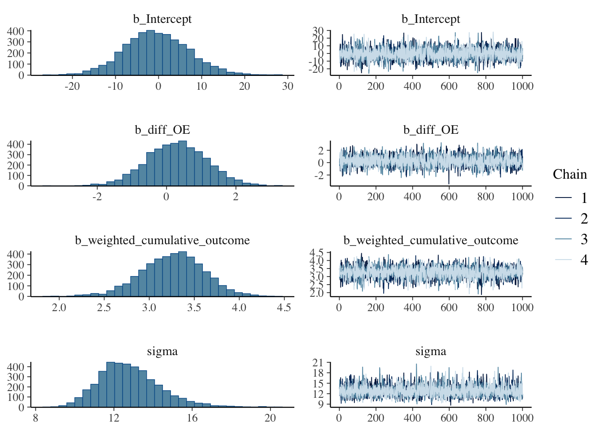

#let's say 40 trials
n_trials <- 40
# I generate these values on the basis of uniform distributions, you can change this obviously.
# remember in our Keren gambling paper, we have two values with equal probability for the gamble, one high one low
G_high <- runif(n_trials, min = 1, max = 5)
G_low <- runif(n_trials, min = -5, max = -1)
# and a certain option
C <- runif(n_trials, min = 1, max = 4)
#
D <- numeric(n_trials)
O <- numeric(n_trials)
H <- numeric(n_trials + 1) # because you need the startng value
E_G <-numeric(n_trials)
# this shoudl simulate the way people make a decision-making process
for (t in 1:n_trials) {
E_G[t] <- (G_high[t] + G_low[t]) / 2 # this is the person just building an average between the gambling option when they see them
if (E_G[t] > C[t]) { # if the average of the gambling bigger than certain, gor for gamble
D[t] <- 1
O[t] <- ifelse(runif(1) < 0.5, G_high[t], G_low[t]) # here just a trick to create the equal probabilities of getting the high or the low
} else {
D[t] <- 0 # decide zero and give the certain value
O[t] <- C[t]
}
# Parameters for happiness update --- these are plucked out of thin air. Obviously you will get these from your model
alpha <- 0.5 #
beta <- 0.1
lambda <- 0.1 # Decay rate for exponential forgetting
# Baseline happiness
H[1] <- 30
# Calculate the weighted cumulative outcome with exponential decay
W <- 0
for (i in 1:t) {
W <- W + O[i] * exp(-lambda * (t - i)) # baseically saying that you accumulate Os weighted by the exponetn--start with the model where you leave this out.
}
H[t + 1] <- H[t] + alpha * (O[t] - C[t]) + beta * W
}
# Exclude initial happiness for fitting
H <- H[-1]
# Create a data frame for fitting
data <- data.frame(
trial = 1:n_trials,
O = O,
C = C,
H = H,
E = E_G
)
###NOTE: check the dataframe and plot the values. You will see that i have not done a particularly good job with the choice of values in the
# distributions and I get silly happinness values.
# the per trial PE
data$diff_OE <- data$O - data$E #
# recalculating here, could have added in above step, it is basically to get the weighted cumulative outcome
data$weighted_cumulative_outcome <- numeric(n_trials)
for (t in 1:n_trials) {
W <- 0
for (i in 1:t) {
W <- W + data$O[i] * exp(-lambda * (t - i))
}
data$weighted_cumulative_outcome[t] <- W
}
#### All this was just to simualte the data, you will not need it in this form, though I highly recommend you do it.
library(brms)Loading required package: RcppLoading 'brms' package (version 2.21.0). Useful instructions
can be found by typing help('brms'). A more detailed introduction
to the package is available through vignette('brms_overview').
Attaching package: 'brms'The following object is masked from 'package:stats':
ar# Define the formula for happiness update
# get_prior(#look it up it helps you get the priors, you could get these priors by default
# H ~ diff_OC + weighted_cumulative_outcome,
# data = data,
# family = gaussian()
# )
fit_brms <- brm(
H ~ diff_OE + weighted_cumulative_outcome,
data = data,
family = gaussian(),
prior = c(
prior(normal(0, 1), class = "b", coef = "diff_OE"), # using normal priors throughout here, I think that is best, but obviously can discuss and play around
prior(normal(0, 1), class = "b", coef = "weighted_cumulative_outcome"), # same here
prior(cauchy(0, 2.5), class = "sigma") # Prior for the error term the Caucy yhas some great properties with heavy tails and is quite robust.
),
iter = 2000, #this is for the MCMC
chains = 4,
seed = 123
)Compiling Stan program...Start sampling
SAMPLING FOR MODEL 'anon_model' NOW (CHAIN 1).
Chain 1:
Chain 1: Gradient evaluation took 1.4e-05 seconds
Chain 1: 1000 transitions using 10 leapfrog steps per transition would take 0.14 seconds.
Chain 1: Adjust your expectations accordingly!
Chain 1:
Chain 1:
Chain 1: Iteration: 1 / 2000 [ 0%] (Warmup)
Chain 1: Iteration: 200 / 2000 [ 10%] (Warmup)
Chain 1: Iteration: 400 / 2000 [ 20%] (Warmup)
Chain 1: Iteration: 600 / 2000 [ 30%] (Warmup)
Chain 1: Iteration: 800 / 2000 [ 40%] (Warmup)
Chain 1: Iteration: 1000 / 2000 [ 50%] (Warmup)
Chain 1: Iteration: 1001 / 2000 [ 50%] (Sampling)
Chain 1: Iteration: 1200 / 2000 [ 60%] (Sampling)
Chain 1: Iteration: 1400 / 2000 [ 70%] (Sampling)
Chain 1: Iteration: 1600 / 2000 [ 80%] (Sampling)
Chain 1: Iteration: 1800 / 2000 [ 90%] (Sampling)
Chain 1: Iteration: 2000 / 2000 [100%] (Sampling)
Chain 1:
Chain 1: Elapsed Time: 0.012 seconds (Warm-up)
Chain 1: 0.007 seconds (Sampling)
Chain 1: 0.019 seconds (Total)
Chain 1:
SAMPLING FOR MODEL 'anon_model' NOW (CHAIN 2).
Chain 2:
Chain 2: Gradient evaluation took 2e-06 seconds
Chain 2: 1000 transitions using 10 leapfrog steps per transition would take 0.02 seconds.
Chain 2: Adjust your expectations accordingly!
Chain 2:
Chain 2:
Chain 2: Iteration: 1 / 2000 [ 0%] (Warmup)
Chain 2: Iteration: 200 / 2000 [ 10%] (Warmup)
Chain 2: Iteration: 400 / 2000 [ 20%] (Warmup)
Chain 2: Iteration: 600 / 2000 [ 30%] (Warmup)
Chain 2: Iteration: 800 / 2000 [ 40%] (Warmup)
Chain 2: Iteration: 1000 / 2000 [ 50%] (Warmup)
Chain 2: Iteration: 1001 / 2000 [ 50%] (Sampling)
Chain 2: Iteration: 1200 / 2000 [ 60%] (Sampling)
Chain 2: Iteration: 1400 / 2000 [ 70%] (Sampling)
Chain 2: Iteration: 1600 / 2000 [ 80%] (Sampling)
Chain 2: Iteration: 1800 / 2000 [ 90%] (Sampling)
Chain 2: Iteration: 2000 / 2000 [100%] (Sampling)
Chain 2:
Chain 2: Elapsed Time: 0.011 seconds (Warm-up)
Chain 2: 0.007 seconds (Sampling)
Chain 2: 0.018 seconds (Total)
Chain 2:
SAMPLING FOR MODEL 'anon_model' NOW (CHAIN 3).
Chain 3:
Chain 3: Gradient evaluation took 3e-06 seconds
Chain 3: 1000 transitions using 10 leapfrog steps per transition would take 0.03 seconds.
Chain 3: Adjust your expectations accordingly!
Chain 3:
Chain 3:
Chain 3: Iteration: 1 / 2000 [ 0%] (Warmup)
Chain 3: Iteration: 200 / 2000 [ 10%] (Warmup)
Chain 3: Iteration: 400 / 2000 [ 20%] (Warmup)
Chain 3: Iteration: 600 / 2000 [ 30%] (Warmup)
Chain 3: Iteration: 800 / 2000 [ 40%] (Warmup)
Chain 3: Iteration: 1000 / 2000 [ 50%] (Warmup)
Chain 3: Iteration: 1001 / 2000 [ 50%] (Sampling)
Chain 3: Iteration: 1200 / 2000 [ 60%] (Sampling)
Chain 3: Iteration: 1400 / 2000 [ 70%] (Sampling)
Chain 3: Iteration: 1600 / 2000 [ 80%] (Sampling)
Chain 3: Iteration: 1800 / 2000 [ 90%] (Sampling)
Chain 3: Iteration: 2000 / 2000 [100%] (Sampling)
Chain 3:
Chain 3: Elapsed Time: 0.013 seconds (Warm-up)
Chain 3: 0.008 seconds (Sampling)
Chain 3: 0.021 seconds (Total)
Chain 3:
SAMPLING FOR MODEL 'anon_model' NOW (CHAIN 4).
Chain 4:
Chain 4: Gradient evaluation took 2e-06 seconds
Chain 4: 1000 transitions using 10 leapfrog steps per transition would take 0.02 seconds.
Chain 4: Adjust your expectations accordingly!
Chain 4:
Chain 4:
Chain 4: Iteration: 1 / 2000 [ 0%] (Warmup)
Chain 4: Iteration: 200 / 2000 [ 10%] (Warmup)
Chain 4: Iteration: 400 / 2000 [ 20%] (Warmup)
Chain 4: Iteration: 600 / 2000 [ 30%] (Warmup)
Chain 4: Iteration: 800 / 2000 [ 40%] (Warmup)
Chain 4: Iteration: 1000 / 2000 [ 50%] (Warmup)
Chain 4: Iteration: 1001 / 2000 [ 50%] (Sampling)
Chain 4: Iteration: 1200 / 2000 [ 60%] (Sampling)
Chain 4: Iteration: 1400 / 2000 [ 70%] (Sampling)
Chain 4: Iteration: 1600 / 2000 [ 80%] (Sampling)
Chain 4: Iteration: 1800 / 2000 [ 90%] (Sampling)
Chain 4: Iteration: 2000 / 2000 [100%] (Sampling)
Chain 4:
Chain 4: Elapsed Time: 0.012 seconds (Warm-up)
Chain 4: 0.007 seconds (Sampling)
Chain 4: 0.019 seconds (Total)
Chain 4: fit_brms Family: gaussian
Links: mu = identity; sigma = identity
Formula: H ~ diff_OE + weighted_cumulative_outcome
Data: data (Number of observations: 40)
Draws: 4 chains, each with iter = 2000; warmup = 1000; thin = 1;
total post-warmup draws = 4000
Regression Coefficients:
Estimate Est.Error l-95% CI u-95% CI Rhat Bulk_ESS
Intercept -0.42 7.53 -14.96 15.09 1.00 3612
diff_OE 0.30 0.86 -1.41 2.00 1.00 3909
weighted_cumulative_outcome 3.26 0.35 2.55 3.92 1.00 3797
Tail_ESS
Intercept 2368
diff_OE 2941
weighted_cumulative_outcome 2845
Further Distributional Parameters:
Estimate Est.Error l-95% CI u-95% CI Rhat Bulk_ESS Tail_ESS
sigma 12.81 1.55 10.19 16.34 1.00 3959 3213
Draws were sampled using sampling(NUTS). For each parameter, Bulk_ESS
and Tail_ESS are effective sample size measures, and Rhat is the potential
scale reduction factor on split chains (at convergence, Rhat = 1).# These are now posterior distributions
plot(fit_brms)